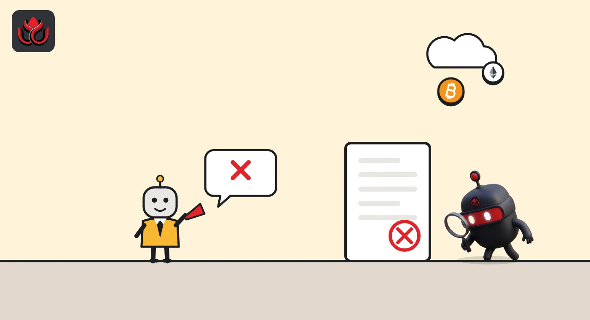

Strategy could be dropped from MSCI's indexes. The final list lands November 11
MSCI has finalized a test that can remove "non-operating" companies, including crypto treasury firms, from its global indexes. In MSCI's own trial run, Strategy and Metaplanet were flagged for deletion, and losing index status means losing automatic buying from passive funds.
Key points
- MSCI said on October 15, 2026, that "non-operating" companies will be ineligible for its global indexes from the November 2026 review.
- In a trial run on May 2026 data, Strategy, Yellow Cake and Metaplanet would have been deleted from the MSCI ACWI IMI index.
- The final list of companies at risk comes on November 11; the rules apply from the close of November 30.
MSCI's new rule
Companies that mainly hold assets, such as bitcoin, rather than run a business will no longer qualify for MSCI's main global indexes. Index provider MSCI said on October 15, 2026, that it will adopt, with minor changes, its proposal to treat these "non-operating" companies as ineligible for its Global Investable Market Indexes, according to MSCI's announcement. Funds and other passive vehicles were already excluded. The new rules extend that to ordinary companies with similar traits, found through new numerical screens.
The test has two steps. A core screen checks whether a company has substantial operating assets. Companies that fail are tested against five financial ratios. A company flagged on four or more of the five becomes ineligible. Buffers apply both to the ratio thresholds and to the timing of additions and removals, to limit churn in the indexes.
Timing matters. A company not yet in the index cannot be added if it fails the screen in either of its two most recent annual filing periods. A current member is removed only if it fails in both, though MSCI may also use the latest interim filing. The rules take effect with the November 2026 Index Review, as of the close of November 30. MSCI has posted a preliminary list of potentially affected members and will publish the final list on November 11.
Who is at risk
Strategy, the largest listed bitcoin holder, is the biggest name exposed. When MSCI ran its proposal on May 2026 data in its August consultation, three companies would have been deleted from the MSCI ACWI IMI index: Strategy, uranium holder Yellow Cake and Japanese bitcoin holder Metaplanet. Three more went on a watchlist: Center Laboratories, Lydia Holding and SharpLink, an ether treasury company.
Strategy's market value in that simulation was about $23.9 billion, by far the largest of the flagged names. Yellow Cake was listed at about $1.8 billion and Metaplanet at about $654 million.
The new rules also end a stopgap. MSCI said it will discontinue the interim measures it announced on October 10, 2025, for companies whose digital asset holdings were 50% or more of total assets. Those measures froze increases in share counts and inclusion factors and deferred additions. From the November review, such companies will be assessed under the new method instead.
How the test works
The August consultation set out the proposed screen. A company passed the core screen if operating assets were more than 50% of total assets. Companies that failed were checked against five flags: operating asset intensity, expense intensity, operating cash flow, fair value intensity and capital dependence.
Current index members got looser cutoffs. For them, the operating asset flag dropped from 20% to 10% and the capital dependence flag rose from 20% to 30%. MSCI's October announcement says the final thresholds sit in an appendix to its index methodology, so treat the chart below as the consultation version.
MSCI's proposed exclusion flags for new entrants (August 2026 consultation)
% of total assets
Fifth flag: negative operating cash flow. Source: MSCI consultation, August 2026
Strategy pushed back
Strategy opposed the proposal. In its response to MSCI, dated August 31, 2026, the company said it believes the proposal is misguided and asked MSCI to withdraw it.
Its main arguments: the terms "operating" and "non-operating" have no basis in US GAAP, IFRS or any recognized legal framework. Strategy reports its bitcoin business as an operating segment under US GAAP, consistent with discussions with SEC staff. It also argued the proposal repackages a withdrawn 2025 plan aimed at digital asset treasury companies.
Strategy said the change would not meaningfully affect it, because funds linked to these MSCI indexes hold about 3.1% of its basic shares. It argued instead that the plan would bring MSCI's own policy views into index building and undermine its neutrality.
The fight is not new. On January 6, 2026, MSCI decided not to exclude digital asset treasury companies in its February 2026 review and to run a broader consultation on non-operating companies instead. The October rules are the result.

Why index status matters
Being in an index means automatic buying from passive funds that track it. Losing that removes a steady source of demand, and the timing is awkward. Strategy reported on October 29 that its bitcoin per share is down 3.7% this year and that it has sold about $431.8 million of bitcoin in 2026 to help fund dividends and buybacks of its preferred stock, according to its Q3 results.
Because current members must fail two annual periods in a row, removals may not be immediate. The November 11 list will show which companies MSCI considers at risk and when.
Timeline
MSCI announces interim measures for companies with 50% or more in digital assets
MSCI holds off on excluding digital asset treasury firms and plans a wider review
Consultation on non-operating companies published
Strategy submits its response asking MSCI to withdraw the proposal
Consultation feedback deadline
MSCI announces final rules
Final list of potentially affected companies due
Rules take effect at the close
LC Insight analysis
This section is our reading of the facts above, not a statement of fact.
- We think the two-year filing test buys members like Strategy time, but it also starts a clock. If MSCI leans on the latest interim filings, that window could close faster than the annual rule suggests.
- The likely result is a split: treasury companies that build real businesses keep index status, while pure holding vehicles drift to a niche investor base. That could widen the discount some already trade at to their crypto.
- Forget the methodology text: the November 11 list is what matters. It will show whether MSCI applies the rules strictly or uses its buffers generously.
What's next
- MSCI's final list of potentially affected companies on November 11
- Whether other index providers adopt similar screens
- Strategy's response to the final list
- Moves by Metaplanet and SharpLink to show operating activity
Disclaimer. This article is based on public information and the sources listed below as of the update time shown. It is for information only and is not investment, legal or tax advice. Figures may change as companies and authorities publish new data.
Sources
- MSCI, Results of the consultation on the eligibility of non-operating companies (October 15, 2026)
- MSCI, Consultation on Eligibility of Non-Operating Companies (August 2026)
- MSCI, Results of the consultation on digital asset treasury companies (January 6, 2026)
- Strategy, Response to MSCI's consultation (August 31, 2026)
- Strategy, Third Quarter 2026 Financial Results (October 29, 2026)